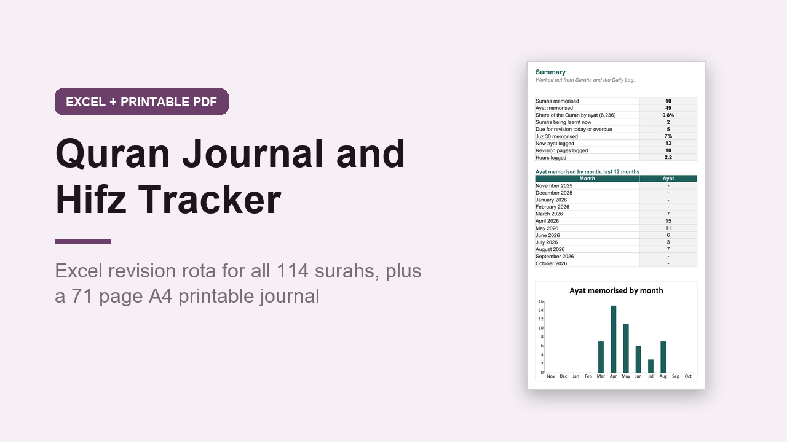

Quran Journal and Hifz Tracker, Excel Revision Rota and A4 Printable
GBP 6.00 · instant digital download

Keep track of your Quran reading, memorisation and revision, on paper and in Excel.
No Quran text or translation is included: surah names and ayat counts only, so you use your own mushaf.
What you get: 2 files.
1.
An editable Excel workbook (.xlsx) with 7 sheets: Start here, Summary, Surahs, Revision Rota, Daily Log, Juz and Settings.
All 114 surahs are listed with their ayat (6,236 in total).
Set each one to Learning, Memorised or Needs revision, and type the date memorised and last revised.
It works out days since revised and the next revision date, turns overdue surahs red, and the Revision Rota lists every memorised surah in the order it is due.
Summary shows ayat and surahs memorised, your share of the Quran by ayat, what is due today and a chart of ayat memorised by month.
A worked example is filled in.
2.
A printable A4 PDF journal, 71 pages, not editable: Quran goals with a Ramadan box, a 4 page tracker for all 114 surahs, a juz tracker, 12 monthly reading logs, a hifz plan, 8 weekly hifz planners, 30 surah reflection pages, 4 word study pages, khatm records, teacher and class notes, and notes.
Opens in Excel, Google Sheets and Numbers.
Digital download, nothing is posted..
What happens after you buy
Payment and delivery are handled by Gumroad. You get the download straight after paying, and a copy of the link by email. Nothing is posted to you.
Tags: quran journal, hifz tracker, quran tracker, islamic planner, ramadan journal, surah tracker, quran printable, muslim planner, hifz planner, excel tracker